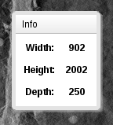

The Version 3Web Image Browser user interface is fairly
similar to that of Version 2 with some alteration of
position of controls, etc.
Basic User Interface
Image Menu
To flip the contrast (reversing black for white), pull down
the Image menu and select the Contrast Flipped item.
Deselecting this item restores contrast to normal.
Color channels may be turned on or off by pulling down
the Image menu and mousing down to Color Channels and
checking or unchecking the Red, Green,
and/or Blue items from the cascading menu.
To restore all settings to default, pull down the Image menu
and select Reset.
Note that when using some plugins,
specifically SLASH (see
below), not all of these functions may be available.
Tools Menu

To get basic information about the image or volume being displayed,
pull down the Tools menu and select the Show Info menu
item. This will pop up a small box containing the dimensions of the
image and, optionally, depending upon the plugin being used, other
relevant information. The box may be repositioned by grabbing its
title bar with the mouse and dragging it in the standard manner. To
dismiss the box, simply click anywhere on the web page outside of the
box.
The Collaborate option is currently unimplemented. Selecting
it does nothing.
Users may alter the Background Color and Timeout
threshold by pulling down the Tools menu and selecting
the Preferences item. A dialog box will appear. To save
changes, click the Accept button. To forget changes,
click Cancel.
To change the background color, click the colored Select button
adjacent to the label Background Color. A Color Chooser
dialog will appear in which you may alter the color by either dragging
the circle in the color field, dragging the slider next to the color
field, or by directly entering values either as HSV
or RGB triples or a hexadecimal value for the seriously
hardcore color enthusiast.
Clicking Accept accepts the value and sets the Select
button background in the Preferences dialog.
Clicking Cancel closes the Color Chooser dialog without
making the alteration.
In neither case is the color selection applied until
the Preferences dialog is closed with the Accept button.
WIB 3 makes use of Cookies to save preferences between
sessions. If you use the Cookie Management features of your
browser, you may need to set appropriate exceptions. It is beyond the
scope of this Help document to provide guidance in doing so,
since these settings are browser-dependent, but they are usually made
on a hostname basis.
Help Menu
To view this page, pull down the Help menu item and
select Manual.
To view the "About" information (author,
copyright, etc.) pull down Help menu item and
select About.
Image Controls
There is a set of Image Controls at the right hand side of the
image display area.
To control the magnification of the image, manipulate the slider
marked Zoom. Under most plugins, the Zoom
is continuously variable, that is, the magnification is not
limited to powers of two up to 2x. Under the SLASH
plugin, only powers of two are available and the maximum magnification
is 1x.
Clicking the + and - arrow buttons raises the
magnification by twice or lowers it by half, respectively.
The brightness of the image may be changed by manipulating
the Brightness slider.
Clicking the + and - arrow buttons incrementally raises
and lowers brightness by one twentieth of the total range,
respectively.
The contrast of the image may be changed by manipulating
the Contrast slider. Clicking the + and - arrow
buttons incrementally raises and lowers contrast by one twentieth of
the total range, respectively.
The Brightness and Contrast controls are not available
when using the SLASH plugin.
These values will be retained in Cookies between sessions on a
per-dataset basis and restored when the user returns to dataset.
Z Slider
If the dataset being viewed is part of a volume, a Z Slider
will be positioned at the bottom of the image display area.
The Z depth may be manipulated by moving the slider, by
clicking the + and - arrow buttons to adjust by plus or
minus one plane, or by typing a numeric value in the box at the right
hand side of the slider.
The depth will be retained in Cookies between sessions on a
per-dataset basis and restored when the user returns to dataset.
SLASH Plugin User Interface
Actions Menu
To move the image, pull down the Actions menu and
select Move.
Then click on the image and, holding down the mouse button, drag the
image to the desired position in the standard manner. Releasing the
mouse button completes the operation.
Note: the move mode may also be initiated at any time under any
other Action mode by pressing and holding the Shift key
on the keyboard and dragging the image as described above. Releasing
the Shift key restores the mode to its previous state.
To draw a closed contour, pull down Actions and select Draw
Object. Pressing the mouse button will start a drawing operation
in the usual manner. Releasing the mouse button completes the
contour.
When a drawing operation is completed a color for the contour will be
randomly selected and, an Annotation dialog will appear. Color
may be edited by clicking the Color button and modifying the
values as discussed above in the Preferences dialog. The first
time the dialog appears, the User Name and Object Name
must be filled in. The User Name must be registered with
the SLASH database. As the Object Name name is typed,
an "autosuggestion" menu of NIF ontology names will
drop down below the input box. It is recommended but not mandatory
that the Object Name be from the NIF ontology.
Subsequent drawing operations will show the dialog box with values
pre-entered.
Simply click Accept to accept the information as shown.
To draw an object with more than one contour, either on the current
plane or on multiple planes, select Draw Multitrace Object. An
Annotation dialog will only appear for the first contour.
Open objects may be created with the Draw Open Object
action. Drawing and annotation operations function similarly
to Draw Object but the contour will not be closed
automatically.
Draw Multitrace Open Object operates in a similar manner to
that above.
To add a trace to an existing object, select Add Trace To
Object from the menu, press Shift and click on an existing
trace belonging to the object you wish to add to. The draw as usual.
If the object is closed, any added traces will also be closed.
To edit the shape of an object or its annotation, select Edit
Object from the Actions menu. An Edit Controls
dialog will appear. You may move this dialog to a preferred location
within the window by dragging on the title box. To choose an object to
be edited, click the Select Object radio button at the bottom
and clicking the object you wish to edit. The object will be
highlighted by a thickening of its trace.
The trace may either be nudged or attracted.
To nudge, select the Nudge radio button at the top of
the Edit Controls box. The radius may be adjusted by dragging
the size of the Nudge Radius circle. The trace may the be
pushed and deformed using the cursor.
Choosing Attractor from the Edit Controls allows you to
"attract" the contour with the mouse. The Attractor
Radius is adjusted in a similar manner to the Nudge Radius
and controls the effective distance of the attraction.
Experimentation with these features on a test trace is recommended to
get a feel for how they operate.
To delete an object, select Delete Object from the menu and
click on the object you wish to remove.
This will remove all traces belonging to the object and the
object's annotation from the database.
WARNING: This operation is currently NOT
undoable.
To delete a trace from and object, select Delete Trace from the
menu and click on the trace you wish to remove. This will remove that
trace only. If the there are no other traces belonging to the object,
the object's annotation will also be removed from the database.
Otherwise, only the trace will be deleted. WARNING: This
operation is currently NOT undoable.
The Undo and Redo operations undo the drawing of a trace
or redo an undone trace.
They only affect trace drawing at this time. More
robust Undo/Redo will be added at a future date.
Optimization
If you are running Firefox, you may wish to tweak your HTTP pipelining
settings.
To do so, open Firefox and type
about:config
in the URL bar.
A long list of fairly arcane preferences will show up.
In the "Filter" bar at the top of the page type
network.http.pipelining
and you should see two or more entries.
If the
network.http.pipelining
setting is set to a boolean value of "false", simply double click on
in the Value column for that Preference and it should toggle to
"true".
Also, you may wish to set the Preference
network.http.pipelining.maxrequests
to 8 (the maximum allowable value) if it is set to some lower value.
To do this, double click in the Value column for this item and a
dialog box should pop up. Type
8
in the appropriate space and click "OK".
This increases the number of HTTP requests "in flight" and can make
for somewhat improved performance. Setting it to a higher number than
8 does nothing useful.